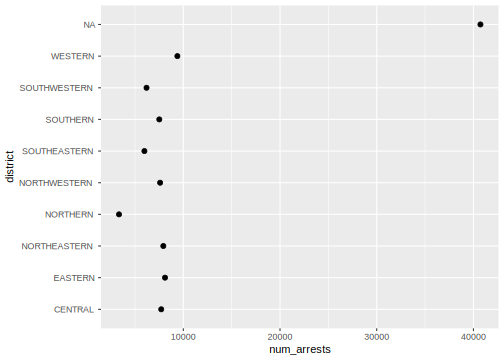
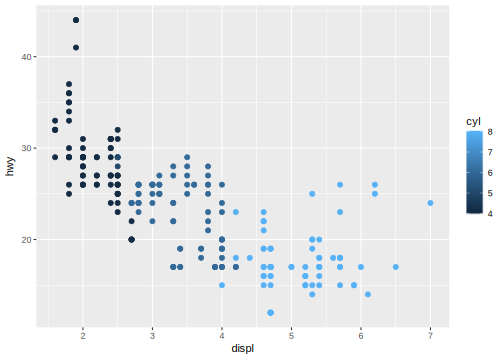
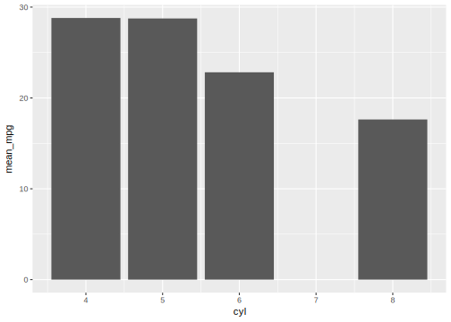
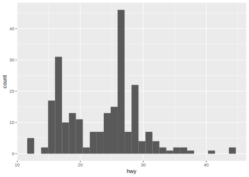
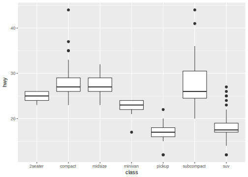

8 Basic plotting with ggplot
We will spend a good amount of time in the course discussing data visualization. It serves many important roles in data analysis. We use it to gain understanding of dataset characteristics throughout analyses and it is a key element of communicating insights we have derived from data analyses with our target audience. In this section, we will introduce basic functionality of the ggplot package to start our discussion of visualization throughout the course.
The ggplot package is designed to work well with the tidyverse set of packages. As such, it is designed around the Entity-Attribute data model. Also, it can be included as part of data frame operation pipelines. Let’s start with a simple example. Let’s create a dot plot of the number of arrests per district in our dataset:
arrest_tab %>%
group_by(district) %>%
summarize(num_arrests=n()) %>%
ggplot(mapping=aes(y=district, x=num_arrests)) +
geom_point()
The ggplot design is very elegant, takes some thinking to get used to, but is extremely powerful. The central premise is to characterize the building pieces behind ggplot plots as follows:
- The data that goes into a plot, a data frame of entities and attributes
- The mapping between data attributes and graphical (aesthetic) characteristics
- The geometric representation of these graphical characteristics
So in our example we can fill in these three parts as follows:
Data: We pass a data frame to the
ggplotfunction with the%>%operator at the end of the group_by-summarize pipeline.Mapping: Here we map the
num_arrestsattribute to thexposition in the plot and thedistrictattribute to theyposition in the plot. Everyggplotwill contain one or moreaescalls.Geometry: Here we choose points as the geometric representations of our chosen graphical characteristics using the
geom_pointfunction.
In general, the ggplot call will have the following structure:
<data_frame> %>%
ggplot(mapping=aes(<graphical_characteristic>=<attribute>)) +
geom_<representation>()8.1 Plot Construction Details
8.1.1 Mappings
Some of the graphical characteristics we will commonly map attributes to include:
| Argument | Definition |
|---|---|
x |
position along x axis |
y |
position along y axis |
color |
color |
shape |
shape (applicable to e.g., points) |
size |
size |
label |
string used as label (applicable to text) |
8.1.2 Representations
Representations we will use frequently are
| Function | Representation |
|---|---|
geom_point |
points |
geom_bar |
rectangles |
geom_text |
strings |
geom_smooth |
smoothed line (advanced) |
geom_hex |
hexagonal binning |
We can include multiple geometric representations in a single plot, for example points and text, by adding (+) multiple geom_<representation> functions. Also, we can include mappings inside a geom_ call to map characteristics to attributes strictly for that specific representation. For example geom_point(mapping=aes(color=<attribute>)) maps color to some attribute only for the point representation specified by that call. Mappings given in the ggplot call apply to all representations added to the plot.
This cheat sheet is very handy: https://www.rstudio.com/wp-content/uploads/2015/03/ggplot2-cheatsheet.pdf
8.2 Frequently Used Plots
We will look comprehensively at data visualization in more detail later in the course, but for now will list a few common plots we use in data analysis and how they are created using ggplot. Let’s switch data frame to the mpg dataset for our examples:
mpg## # A tibble: 234 x 11
## manufacturer model displ year cyl trans drv cty hwy fl
## <chr> <chr> <dbl> <int> <int> <chr> <chr> <int> <int> <chr>
## 1 audi a4 1.80 1999 4 auto(l… f 18 29 p
## 2 audi a4 1.80 1999 4 manual… f 21 29 p
## 3 audi a4 2.00 2008 4 manual… f 20 31 p
## 4 audi a4 2.00 2008 4 auto(a… f 21 30 p
## 5 audi a4 2.80 1999 6 auto(l… f 16 26 p
## 6 audi a4 2.80 1999 6 manual… f 18 26 p
## 7 audi a4 3.10 2008 6 auto(a… f 18 27 p
## 8 audi a4 quat… 1.80 1999 4 manual… 4 18 26 p
## 9 audi a4 quat… 1.80 1999 4 auto(l… 4 16 25 p
## 10 audi a4 quat… 2.00 2008 4 manual… 4 20 28 p
## # ... with 224 more rows, and 1 more variable: class <chr>8.2.1 Scatter plot
Used to visualize the relationship between two attributes.
mpg %>%
ggplot(mapping=aes(x=displ, y=hwy)) +
geom_point(mapping=aes(color=cyl))
8.2.2 Bar graph
Used to visualize the relationship between a continuous variable to a categorical (or discrete) attribute
mpg %>%
group_by(cyl) %>%
summarize(mean_mpg=mean(hwy)) %>%
ggplot(mapping=aes(x=cyl, y=mean_mpg)) +
geom_bar(stat="identity")
8.2.3 Histogram
Used to visualize the distribution of the values of a numeric attribute
mpg %>%
ggplot(mapping=aes(x=hwy)) +
geom_histogram()
8.2.4 Boxplot
Used to visualize the distribution of a numeric attribute based on a categorical attribute
mpg %>%
ggplot(mapping=aes(x=class, y=hwy)) +
geom_boxplot()